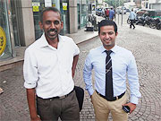
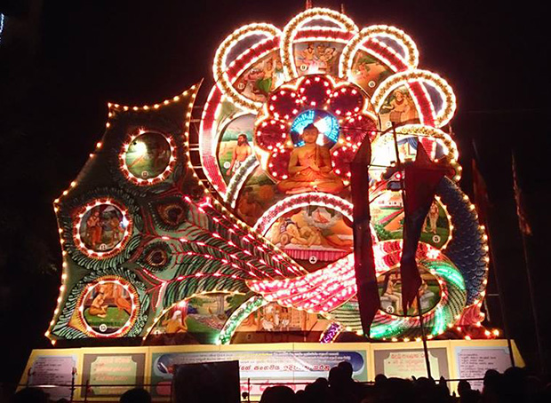
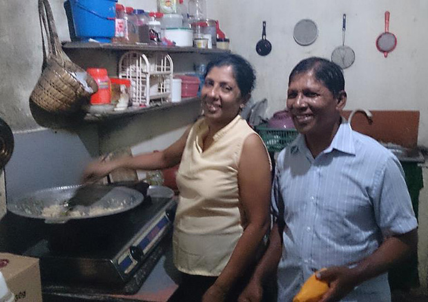
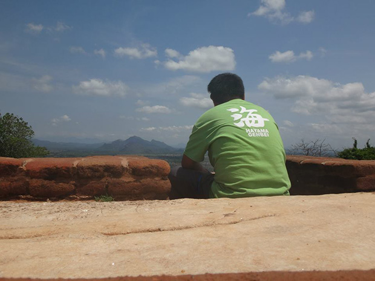
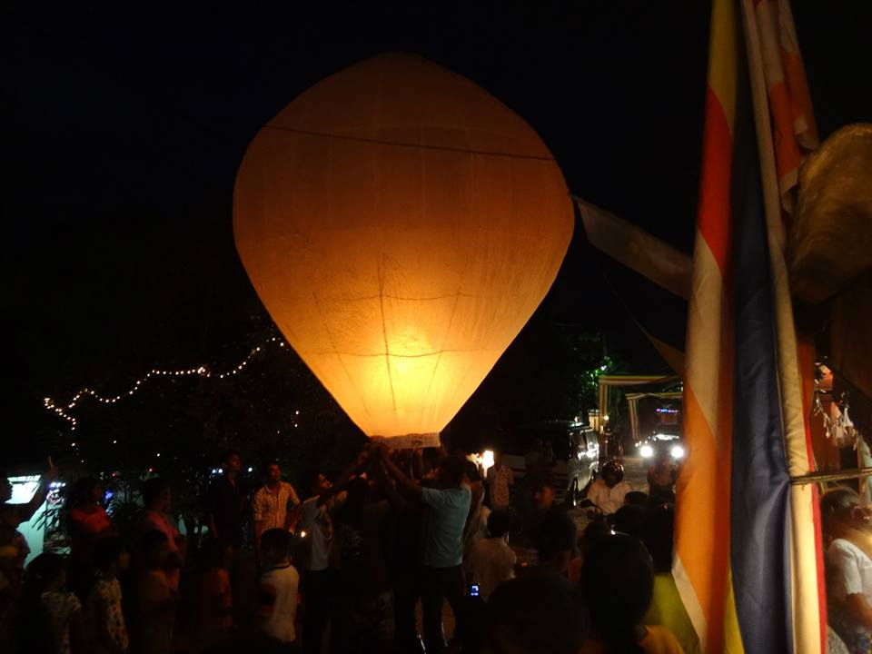
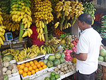

「過去にフィリピン、マレーシアへの留学を経験しており、別のアジア圏での滞在経験を得たかったことと、そして何より成長著しいスリランカという国に魅力を感じて、参加を決めました。
担当教師は、男性２人でしたが、留学前にイメージしていた英語の訛り等もなく、聞き取りやすく会話も楽しかったですし、授業もコチラのやりたい事を考慮してもらい、柔軟に対応してもらえました。
やはり個別レッスンなので、宿題の内容等も含め、相談しやすいので良かったです。

スリランカでのホームステイは、大変おもしろかったです。
水シャワー、いっぱいの虫、ヤモリ、断水、停電、いろいろ途上国ならではの不便さはありましたが、ホストファミリーの協力もあり、特別な問題は無く、生活できました。
ウェサックのお祭りの雰囲気なども味わえたので、とても貴重な体験になりました。

ホストファミリーは、最高の家族でした。
全員仕事があり忙しい中で、常に私のことを気に掛けてくれていたので、何一つ不自由がなく、不満もありません。
ご飯もすごくおいしかったです。
スリランカに行く前は、もう少し発展していると思っていましたが、思った以上に発展途上の印象を受けました。
カシューナッツのカレーが絶品でした。
英語だけでなく、文化や宗教、価値感の違いなど、多くの学びや気づきがありました。
無秩序な道路交通など、今後、どのように変わって行くのか興味深いです。
それと現地の人は日常でもう少し英語を使うのかと思っていました。

４週間は、スリランカを味わいつくすのにも英語で成果を出すのにも短すぎたと思います。
もう少し時間を取るべきでした。
あと後半は雨期に入り、予定していた観光等が流れてしまったので、時期をもう少し検討すべきでした。
事前に与えていただいた情報は充分で何も不満はありません。

フィリピン、マレーシアでの留学は寮に滞在し、英語学校で授業を受ける形でしたので、本プログラムでは全く違う経験ができました。
ホームステイではレッスン以外も英語を話す機会が多いので、使う単語などが違ってくるなと勉強になりました。
スリランカへはもちろん再び訪れたいと思います。
次回は留学という形ではなく、何か仕事で行けたらと思います。
留学プログラムに関してはネパールを検討してみたいと思います。

常に完璧なサポートがあったと感じました。
留学前から現地入りまで、気になる点は全て回答いただき、何一つ不安もありませんでしたし、現地でもマーネルさん、ディルルクさん始め親切でしたし、要望にも即座に対応いただけて、大きなトラブルも無く過ごせました。
本プログラムを通じて、本当に貴重な経験ができました。
短い期間でしたが、充分にスリランカを満喫できました。
本当に行って良かったです。ありがとうございました。」